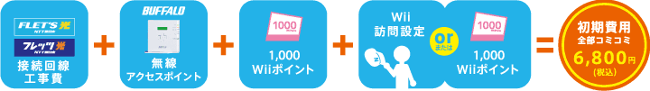
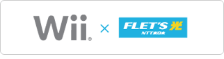
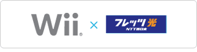

【ご注意】本サービスはすでに終了しております。（2013.2）
任天堂とＮＴＴ東日本、ＮＴＴ西日本が共同で、Ｗｉｉを楽しむためのインターネット接続をサポートするサービスを開始しました！「簡単！便利！Ｗｉｉ接続おまかせパック」は、ＮＴＴ東日本が提供する「Ｂフレッツ」、ＮＴＴ西日本が提供する「フレッツ・光プレミアム」「Ｂフレッツ」に新規で申し込む場合、Ｗｉｉのインターネット接続に必要な機器の提供や回線工事費用が、パック料金で受けられるというもの。希望すれば訪問設定のサービスも受けることができます。Ｗｉｉ＋光で、リビングのブロードバンド環境を充実させちゃいましょう。
※ＮＴＴ東日本が提供する「Ｂフレッツ」、ＮＴＴ西日本が提供する「フレッツ・光プレミアム」「Ｂフレッツ」は、光ファイバーを使った高速インターネット接続サービスのことです。電話や映像も楽しめる「充実」のアプリケーション、好みに合わせて「自由」に選べるプロバイダ、いつでも「安心」してご利用いただくための24時間サポート体制が特徴です。
※ＮＴＴ東日本が提供する「Ｂフレッツ」、ＮＴＴ西日本が提供する「フレッツ・光プレミアム」「Ｂフレッツ」は、光ファイバーを使った高速インターネット接続サービスのことです。電話や映像も楽しめる「充実」のアプリケーション、好みに合わせて「自由」に選べるプロバイダ、いつでも「安心」してご利用いただくための24時間サポート体制が特徴です。


ちなみに、お申し込みの際には、プロバイダパックでの申し込みが必要など、いくつか注意事項がありますので、詳しくは下記のページをご覧ください。

ＮＴＴ東日本インターネット接続サービス
ＮＴＴ東日本インターネット接続サービス

ＮＴＴ西日本インターネット接続サービス
ＮＴＴ西日本インターネット接続サービス
 ニュースリリース：任天堂とＮＴＴ東日本・ＮＴＴ西日本における「Ｗｉｉ®」と「フレッツ光」との接続推進に向けた協業について
ニュースリリース：任天堂とＮＴＴ東日本・ＮＴＴ西日本における「Ｗｉｉ®」と「フレッツ光」との接続推進に向けた協業について